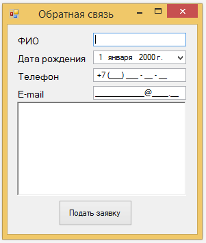
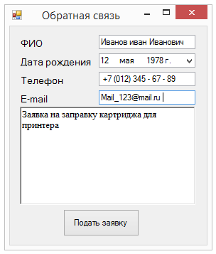
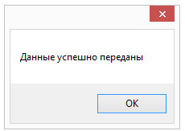
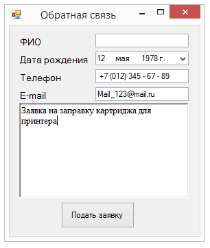
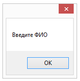
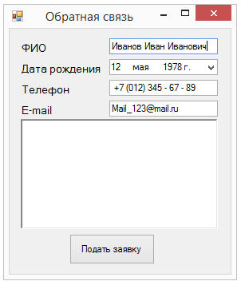
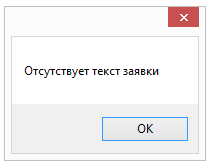

Функциональное тестирование через интерфейс
Цель: изучение основных принципов функционального тестирования программного обеспечения через пользовательский интерфейс.
Функциональное тестирование через интерфейс (ручное тестирование) – это процесс поиска дефектов в работе программы, когда специалист по тестированию проверяет работоспособность всех компонентов программы, исполняя роль пользователя приложения. Часто, для точности проверки, специалист по тестированию использует заранее заготовленный план тестирования, в котором отмечены наиболее важные аспекты работы программы.
Ручное тестирование – это ключевой этап разработки программного обеспечения. Специалист по тестированию может не придерживаться строго плану тестирования, а отклоняться от него для более полного тестирования, приближенного к использованию программы обычным пользователем.
В качестве примера рассмотрим программу отправки заявки для технической поддержки.

В лабораторной “Функциональное тестирование” были созданы тестовые варианты, которые будут использоваться для тестирования приложения.
Проведем первый тест, для этого запустим тестируемое приложение. Далее откроем таблицу тестовых сценариев, полученную в лабораторной и добавим новый столбец “Полученный результат”
| Номер теста | Описание | Шаги теста | Тестовые варианты | Ожидаемые результаты | Полученный результат |
Задание 1:
Самостоятельно откройте тестовое
приложение соответствующее вашему варианту, а также отчет сделанный в лабораторной “Функциональное тестирование”
и дополните таблицу столбцом. Вариант задания выбирается по последним двум цифрам в студенческом билете. Тестовое приложение находится в папке "Programms".
Следующим шагом начнем тестирование первого тестового сценария, который подразумевает ввод корректных данных во все поля формы.
| Номер теста | Описание | Шаги теста | Тестовые варианты | Ожидаемые результаты | Полученный результат |
| 1 | Ввод корректных данных | Ввод ФИО Ввод даты рождения Ввод телефона Ввод e-mail Ввод заявки |
Иванов Иван Иванович 12.05.1978 +7(012)-345-67-89 Mail_123@mail.ru «Заявка на заправку картриджа для принтера» |
Сообщение об успешной отправке данных на сервере, данные присутствуют в базе без изменений | Сообщение об успешной отправке данных на сервере, данные присутствуют в базе без изменений |
Сперва заполняем форму согласно тестовому сценарию.

После заполнения нажимаем кнопку подтверждения подачи заявки и получаем следующее диалоговое окно.

После осуществления ввода данных произошла отправка данных на сервер. Необходима проверка данных на сервер, чтобы убедится, что данные дошли в полном объеме и без искажений. Если все прошло так, как ожидалось в тестовом сценарии, то позитивный тест пройден. Добавим к таблице еще один столбец «Статус теста», в который допишем, состояние теста «пройден».
После прохождения первого теста переходим к следующему.
| Номер теста |
Описание | Шаги теста | Тестовые варианты | Ожидаемые результаты | Полученный результат | |
| 2 | Ввод данных, кроме ФИО | Ввод даты рождения Ввод телефона Ввод e-mail Ввод заявки | - 12.05.1987 +7(012)-345-67-89 Mail_123@mail.ru «Заявка на заправку картриджа для принтера» |
Сообщение об отсутствии ФИО, отсутствие отправки данных | Сообщение об отсутствии ФИО, отсутствие отправки данных |
Аналогично первому тесту вводим данные, за исключение поля ФИО.

После нажатия кнопки подать заявку появляется следующее диалоговое окно.

В данном случае не было указано ФИО. В результате выполнения программы появилось сообщение об отсутствующем ФИО, а данные не были переданы на сервер. На данном этапе протестирован негативный тест. Тест считается пройденным.
После прохождения второго теста переходим к третьему.
| Номер теста |
Описание | Шаги теста | Тестовые варианты | Ожидаемые результаты | Полученный результат |
| 3 | Ввод данных, кроме заявки | Ввод ФИО Ввод даты рождения Ввод телефона Ввод e-mail |
Иванов Иван Иванович 12.05.1987 7(012)-345-67-89 Mail_123@mail.ru «-» |
Сообщение об отсутствии текста заявки, отсутствие отправки данных | Сообщение об отсутствии заявки и сообщение об отправки данных на сервер. |
Следующим шагом выполняем третий тест, для этого введем тестовый сценарий, предполагающий негативное тестирование, при котором не будет указан текст заказа.

После нажатия кнопки “Подать заявку” появляется диалоговое окно, собщающее о том, что нет текста заявки.

Но после его закрытия появляется сообщение о том, что были переданы данные на сервер, что свидетельствует о том, что появилась новая пустая заявка, чего быть не должно.
В данном случае тест считается не пройденным, так как один из двух полученных результатов оказался несоответствующим ожидаемым результатам. В ходе выполнения программы, формируется пустая заявка. Необходима доработка запрета отправки некорректных данных.
При последующем тестировании аналогично вводятся данные из тестового варианта, после чего сравнивается ожидаемый результат с полученным результатом.
Задание 2:
На основе примера заполните таблицу тестирования результатами, полученными в ходе тестирования.
Контрольное задание
1.На основе тестового приложения, соответсвующего вашему варианту, и таблицы тестовых сценариев из лабораторной “Функциональное тестирование” провести тестирование приложения. Вариант задания выбирается по последним двум цифрам в студенческом билете. Тестовое приложение находится в папке "Programms".
2.Заполнить отчет.